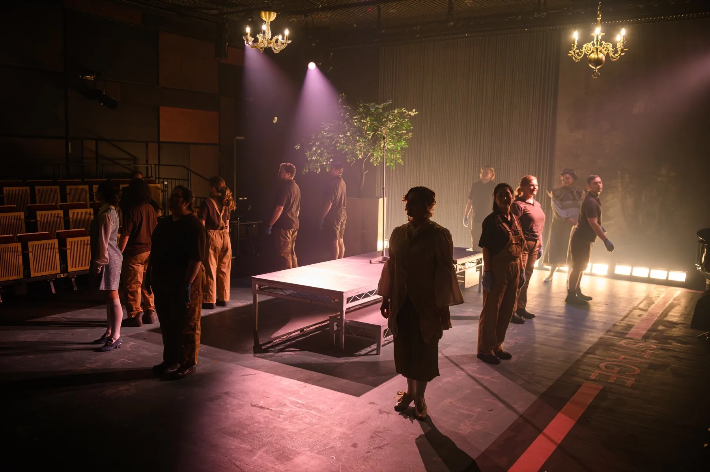

Production Electrician
Spring Opera Scenes (2025)
Photos by David Monteith-Hodge (@photographise)
My role
Production Electrician
I designed and built custom PCBs to fit into the internal terminal blocks of two chandeliers to make both of them wirelessly dimmed. Running off of an ESP32-C3 processor, they connected to a hidden Wi-Fi network and received unicast sACN.
Production Planning
-
The original concept showed three different chandelier designs that had to be moved around during the different opera acts.
Due to the requirements of the show, I designed these chandeliers to be completely wireless using ESP microcontrollers. I designed PCBs to fit inside the terminal blocks of the chandeliers to dim individual stems/channels.
Below you can see the schematic and footprints I sent off to the manufacturer.
-
This inspired me to make an all-in-one solution to other wireless practicals, considering the limitations of existing systems.
This would be modular so that you could have different boards, layered on top of each other, to power different LED types: PWM, pixel, etc. The PWM board would have a MOSFET for cutting power when the pixels are not in use.
Another feature I started to design was a custom USB-C potential difference negotiation board which was customisable through software. A lot of this is still in the design phase, which is shown below.
-
The show was hosted in a studio-type environment, with a versatile pipe structure above a tension wire grid.
Due to having such a versatile grid, I decided to model the venue in VWX to make sure that no department clashed with each other. It also meant that the lighting designer could pre-visualise the show in a more accurate 3D environment.
The venue was modelled from architectural drawings and textured in VWX. Below is a timeline of the different scenes of the show. It is a detailed model so might take some time to load, depending on your internet connection.